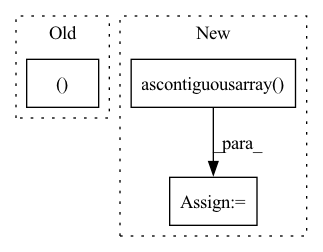

Pattern ID :35269
Before Change
import torch
def prepare_input(image, input_shape):
input_height, input_width = input_shape
input_img = cv2.cvtColor(image, cv2.COLOR_BGR2RGB)
// Resize input imageAfter Change
def prepare_input(image, input_shape, stride, pt):
input_tensor = LetterBox(input_shape, auto=pt, stride=stride)(image=image)
input_tensor = input_tensor.transpose((2, 0, 1))[::-1] // HWC to CHW, BGR to RGB
input_tensor = np.ascontiguousarray( input_tensor) .astype(np.float32) // contiguous
input_tensor /= 255.0 // 0 - 255 to 0.0 - 1.0
input_tensor = input_tensor[None].astype(np.float32)
return input_tensor
In pattern: SUPERPATTERN
Frequency: 3
Non-data size: 3
Instances Fragment ID: 100309080
Project Name: augmentedstartups/as-one
Commit Name: 37de4fbaee82f479c5ca8d53a2450c7083056ef1
Time: 2023-01-16
Author: umair.imran@axcelerate.ai
File Name: asone/detectors/yolov8/utils/yolov8_utils.py
M Class Name: AnonimousClass
N Class Name: AnonimousClass
M Method Name: prepare_input(4)
N Method Name: prepare_input(2)
M Parent Class:
N Parent Class:
M File Name: asone/detectors/yolov8/utils/yolov8_utils.py
N File Name: asone/detectors/yolov8/utils/yolov8_utils.py
M Start Line: 7
M End Line: 15
N Start Line: 7
N End Line: 12
Before Change
out_bboxes[..., 1] -= 1
return img, out_bboxes
// this method modifies the target width and height of
// the images by reshaping them so that the largest size of
// a given image is set by its closest multiple to 640 (plus someAfter Change
out_bboxes[..., 1] -= 1
img = img.transpose((2, 0, 1))
img = np.ascontiguousarray( img)
return torch.from_numpy(img), out_bboxes
// this method modifies the target width and height of
// the images by reshaping them so that the largest size of Fragment ID: 100309071
Project Name: alessandromondin/yolov5m
Commit Name: 67592bd2ca15b093b59ddd4a11287df9c55f48d0
Time: 2022-11-21
Author: alessandromondin00@gmail.com
File Name: dataset_ultra.py
M Class Name: MS_COCO_2017
N Class Name: MS_COCO_2017
M Method Name: __getitem__(2)
N Method Name: __getitem__(2)
M Parent Class: Dataset
N Parent Class: Dataset
M File Name: dataset_ultra.py
N File Name: dataset_ultra.py
M Start Line: 85
M End Line: 122
N Start Line: 87
N End Line: 133
Before Change
self._add_horizontal_beam(psds[target])
return (
torch.from_numpy(_create_input_image_from_psds(psds)),
(strength > 0).float() ,
)
After Change
// Randomly mix two adjacent vertical lines.
indices = np.arange(psds.shape[2]) + np.random.uniform(0, 2, psds.shape[2])
psds = np.ascontiguousarray( psds[:, :, np.argsort(indices)])
// Randomly mix two adjacent horizontal lines.
indices = np.arange(psds.shape[1]) + np.random.uniform(0, 3, psds.shape[1])
psds = np.ascontiguousarray(psds[:, np.argsort(indices), :])
// Random vertical and horizontal flip. Fragment ID: 100309074
Project Name: affjljoo3581/g2net-detecting-continuous-gravitational-waves
Commit Name: 075688fe575d3e91ea324ea0c0a25f6197ea29b9
Time: 2023-01-01
Author: affjljoo3581@gmail.com
File Name: src_legacy/data.py
M Class Name: G2NetTrainDataset
N Class Name: G2NetTrainDataset
M Method Name: __getitem__(2)
N Method Name: __getitem__(2)
M Parent Class: Dataset
N Parent Class: Dataset
M File Name: src_legacy/data.py
N File Name: src_legacy/data.py
M Start Line: 75
M End Line: 78
N Start Line: 53
N End Line: 86